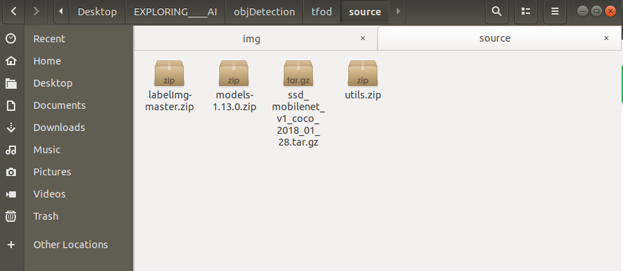
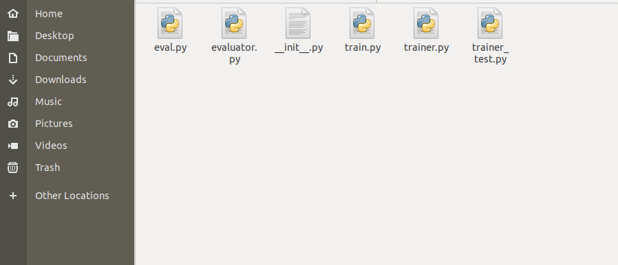
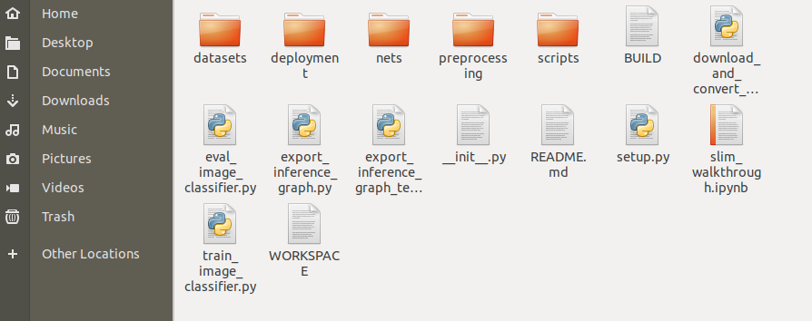

Configuration steps for TensorFlow object detection-
STEP-1 Download the following content-
-
Download v1.13.0 model.
-
Download the ssd_mobilenet_v1_coco model from the model zoo or any other model of your choice from TensorFlow 1 Detection Model Zoo.
-
Download Dataset & utils.
-
Download labelImg tool for labeling images.
before extraction, you should have the following compressed files -

STEP-2 Extract all the above zip files into a tfod folder and remove the compressed files-
Now you should have the following folders -

STEP-3 Creating virtual env using conda-
Commands
for specific python version
conda create -n your_env_name python=3.7
conda activate your_env_name
STEP-4 Install the following packages in your new environment-
for GPU
pip install pillow lxml Cython contextlib2 jupyter matplotlib pandas opencv-python tensorflow-gpu==1.15.0
for CPU only
pip install pillow lxml Cython contextlib2 jupyter matplotlib pandas opencv-python tensorflow==1.15.0
STEP-5 Install protobuf using conda package manager-
conda install -c anaconda protobuf
STEP-6 For protobuff to .py conversion download from a tool from here-
For windows -> download source for other versions and OS - click here
Open command prompt and cd to research folder.
Now in the research folder run the following command-
For Linux or Mac
protoc object_detection/protos/*.proto --python_out=.
For Windows
protoc object_detection/protos/*.proto --python_out=.
STEP-7 Paste all content present in utils into research folder-
Following are the files and folder present in the utils folder-
STEP-8 Paste ssd_mobilenet_v1_coco or any other model downloaded from model zoo into research folder-
Now cd to the research folder and run the following python file-
python xml_to_csv.py
STEP-9 Run the following to generate train and test records-
from the research folder-
python generate_tfrecord.py --csv_input=images/train_labels.csv --image_dir=images/train --output_path=train.record
python generate_tfrecord.py --csv_input=images/test_labels.csv --image_dir=images/test --output_path=test.record
STEP-10 Copy from research/object_detection/samples/config/ YOURMODEL.config file into research/training-
Note
The following config file shown here is with respect to ssd_mobilenet_v1_coco. So if you have downloaded it for any other model apart from SSD you'll see config file with YOUR_MODEL_NAME as shown below-
model {
YOUR_MODEL_NAME {
num_classes: 6
box_coder {
faster_rcnn_box_coder {
Hence always verify YOUR_MODEL_NAME before using the config file.
STEP-11 Update num_classes, fine_tune_checkpoint ,and num_steps plus update input_path and label_map_path for both train_input_reader and eval_input_reader-
Info
Changes to be made in the config file are highlighted in yellow color. You must update the value of those keys in the config file.
Click here to see the full config file
1 2 3 4 5 6 7 8 9 10 11 12 13 14 15 16 17 18 19 20 21 22 23 24 25 26 27 28 29 30 31 32 33 34 35 36 37 38 39 40 41 42 43 44 45 46 47 48 49 50 51 52 53 54 55 56 57 58 59 60 61 62 63 64 65 66 67 68 69 70 71 72 73 74 75 76 77 78 79 80 81 82 83 84 85 86 87 88 89 90 91 92 93 94 95 96 97 98 99 100 101 102 103 104 105 106 107 108 109 110 111 112 113 114 115 116 117 118 119 120 121 122 123 124 125 126 127 128 129 130 131 132 133 134 135 136 137 138 139 140 141 142 143 144 145 146 147 148 149 150 151 152 153 154 155 156 157 158 159 160 161 162 163 164 165 166 167 168 169 170 171 172 173 174 175 176 177 178 179 180 181 182 183 184 185 186 187 188 189 190 191 192 193 194 195 196 | |
STEP-12 From research/object_detection/legacy/ copy train.py to research folder
legacy folder contains train.py as shown below - 
STEP-13 Copy deployment and nets folder from research/slim into the research folder-
slim folder contains the following folders -

STEP-14 NOW Run the following command from the research folder. This will start the training in your local system-
Note
copy the command and replace YOUR_MODEL.config with your own model's name for example ssd_mobilenet_v1_coco.config and then run it in cmd prompt or terminal. And make sure you are in research folder.
python train.py --logtostderr --train_dir=training/ --pipeline_config_path=training/YOUR_MODEL.config
Warning
Always run all the commands in the research folder.